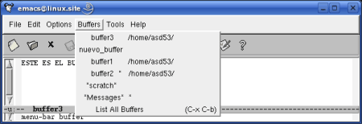

8. Buffers Múltiples
Pág.Anterior | Índice | Pág.Siguente
Con Emacs puede editarse más de un buffer al mismo tiempo y , como veremos en el siguiente capítulo, visualizarlos en ventana y marcos independientes.
En cada momento estaremos llevando a cabo las tareas de edición en uno de los buffers abiertos, aquel en el que se encuentre el cursor y al que denominaremos buffer activo . Pero debemos tener presente que, en realidad, todos los buffers abiertos durante la sesión están activos.
En esta funcionalidad, posible através de unos pocos y simples comandos, radica uno de los factores que convierten Emacs en una aplicación "adictiva". :-)
8.1 Abrir y crear nuevos buffers.
Pág.Anterior | Índice | Inicio Página | Pág.Siguente
Para abrir o crear un nuevo buffer recurriremos al ya conocido comado:
- Comando : C-x C-f
- Opción de menú : File-->Open File
- Comando "largo" : M-x find-file <Enter>
Su funcionamiento se describió en el capítulo: Abrir archivos [1.1]
8.2 Moverse entre buffers.
Pág.Anterior | Índice | Inicio Página | Pág.Siguente
Cada vez que abramos un nuevo archivo con C-x C-f, Emacs creará el correspondiente buffer , situando en él el cursor.
Para pasar del buffer activo a otro de los buffers que tengamos abiertos, en otras palabras, el cambio de buffer activo, se hacerse de dos maneras:
- Mediante el comando C-x b
- Através del menú Buffers
Mas adelante, en el siguiente capítulo ( Lista de Buffers [ 9.7 ]), veremos como podemos movernos y gestionar buffers de otra forma, a través de la Lista de buffers.
El Comando C-x b
- Comando : C-x b nombre_buffer <Enter>
- Comando "largo" : M-x switch-to-buffer <Enter>
Veamos su modo de operar:
Al teclear el comando C-x b, en el mini-buffer nos aparece el siguiente mensaje:
Se nos pide que introduzcamos el nombre del buffer al que queremos cambiarnos. Introduciendo el nombre y pulsando <Enter>, se realizará el cambio de buffer activo.
Entre paréntesis se nos presenta el nombre del buffer al que se cambiará si omitimos el nombre del buffer y pulsamos <Enter>. Suele ser el nombre del anterior buffer activo.
Introducimos el nombre del buffer al que queremos cambiar, en nuestro caso: buffer3 :
Tras pulsar <Enter> se produce el cambio de buffer activo :
Si se especificara el nombre de un buffer inexistente, Emacs crearia un nuevo buffer vacío, con el nombre que hemos introducido, y situaria el cursor en él.
El menú Buffers
Tambíen podemos cambiar de buffer activo mediante la opción de menú:
Buffers
Al activarla aparecerá una ventana con la relación de buffers abiertos. Con el ratón seleccionaremos el buffer al que deseemos cambiar : 
Otra forma de acceder al menú Buffers es , con el cursor situado en la zona de edición, pulsar:
C-<Bizqdo>Aparecerá una ventana con la relación de buffers abiertos en al que, con el ratón, podremos realizar la selección:
8.3 Eliminación de buffers.
Pág.Anterior | Índice | Inicio Página | Pág.Siguente
Debemos aclarar varios conceptos:
- La eliminación de un buffer no comportará la eliminación del archivo asociado a dicho buffer.
- No es lo mismo eliminar un buffer que cerrar la visualización de un buffer:
- Los buffers abiertos pero que no se estén visualizando, están activos en Emacs.
- En cambio, cuando se elimina un buffer, deja de formar parte de la sesión de Emacs
Para eliminar un buffer utilizaremos el siguiente comando:
- Comando : C-x k
- Comando "largo" : M-x kill-buffer <Enter>
Al ejecutar el comando, en en mini-buffer aparecera un mensaje solicitando el nombre del buffer a eliminar.
Entre paréntesis aparecerá el nombre del buffer activo como buffer a eliminar en el caso de no introducir ningún nombre.
Pulsando <Enter> se producirá la eliminación.
En el caso que deseemos eliminar un buffer en el que se hayan realizado cambios que aún no se hayan guardado, Emacs nos lo advertirá y nos solicitará que confirmemos o no su eliminación:
 |
Tecleando yes se cerrará el buffer sin guardar los cambios.
Si tecleamos no no se produce la eliminación del buffer.
Si deseamos eliminar múltiples buffers podemos hacerlo mediante el siguiente comando:
Comando "largo" : M-x kill-some-buffers <Enter>
Emacs nos ira pidiendo, para cada buffer, confirmación para prodecer a su eliminación. En el mensaje nos advertirá
de si se trata de un buffer que no ha sido modificado ( Unmodified) :
8.4 Guardar múltiples buffers.
Pág.Anterior | Índice | Inicio Página | Pág.Siguente
Como ya se vió en Guardar archivos [2.1], mediante el comando C-x C-s podemos ir guardando los buffers de forma individual.
Pero cuando tenemos abiertos múltiples buffers, tenemos una opción de guardarlos todos de una vez. Es mediante el comando:
Comando "largo" : M-x save-some-buffers <Enter>
Emacs nos irá preguntando, para cada buffer asociado a un archivo, si deseamos guardarlo o no.
Las posibles respuestas son:
| y | : Si guarda el buffer. |
| n | : No guarda el buffer. |
| ! | : Guarda todos los buffers sin preguntar. |
| . | : Guarda éste buffer y ninguno más. |
| q | : Cancela el comando sin salvar el actual buffer. |
| C-r | : Examina el actual buffer (modo vista). Se sale del modo vista tecleando q |
8.5 Renombrar buffers.
Pág.Anterior | Índice | Inicio Página | Pág.Siguente
El comando utilizado para cambiar el nombre de un buffer es:
- Comando "largo" : M-x rename-buffer.
Tras introducir el comando, en el mini-buffer aparece un mensaje, Rename buffer (to new name):, solicitándonos la introducción del nuevo nombre. Introduciendo éste y pulsando <Enter>, se produce el cambio de nombre. del nuevo nombre.
Podemos ocasionar que dos buffers tengan el mismo nombre. En este caso, Emacs añade un <2> al final del nombre del segundo buffer. Si se hubiesen creado más de dos buffers con el mismo nombre, Emacs los distinguiria con los apéndices <3>, <4> ...etc.
8.6 Reemplazar el contenido de un buffer.
Pág.Anterior | Índice | Inicio Página | Pág.Siguente
Para sustituir el contenido de un buffer activo por el de otro archivo, se procede ,como ya se vió en Sustitución de archivos [1.3], con el comando C-x C-v.
Una vez realizada la sustitución de contenido, podemos observar como el nombre del buffer sustituido ha sido reemplazado, en la lista de buffers ( menú Buffers), por el del nuevo archivo.
8.7 Buffers de "sólo lectura".
Pág.Anterior | Índice | Inicio Página | Pág.Siguente
En ocasiones puede ser conveniente tener abiertos buffers en modo sólo lectura, evitando la posibilidad de modificación.
El comando que nos permite conmutar el paso de modo lectura-escritura al modo sólo-lectuta es:
- Comando : C-x C-q
Cuando estamos en modo lectura-escritura, en la parte izquierda de la linea de modo el signo
--, o ** :
Al cambiar a modo sólo-lectura, el anterior signo cambiará a %% :
Debemos tener en cuenta que en buffers sólo-lectura, operan los comandos de seleccionar y copiar texto, por lo que podremos pegar el texto seleccionado y copiado en el buffer sólo-lectura, en otro buffer.
8.8 Lista de buffers.
Pág.Anterior | Índice | Inicio Página | Pág.Siguente
Una manera ágil de gestionar buffers es através de la Lista de buffers
Debido a que para el manejo de la Lista de buffers puede ser conveniente el conocimiento de algunos comandos de gestión de ventanas, se traslada este apartado a 9.Ventanas [9.7]